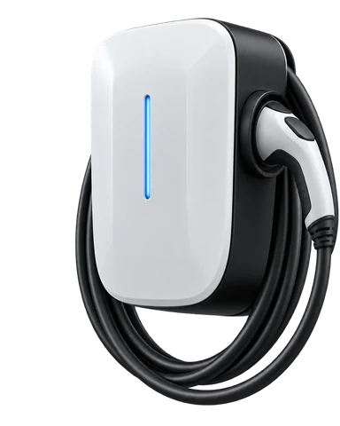
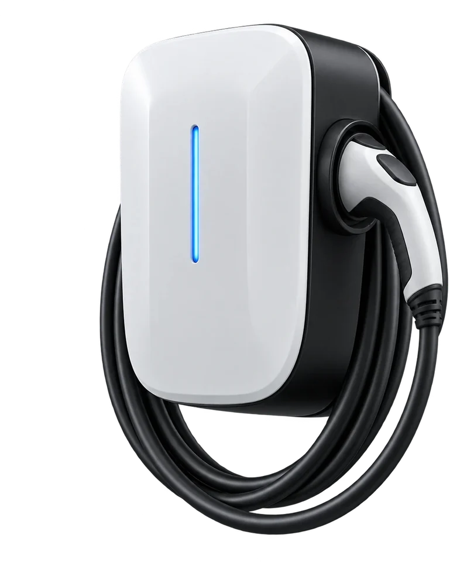
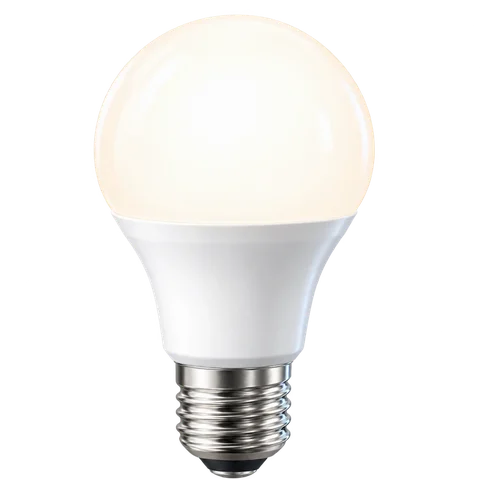
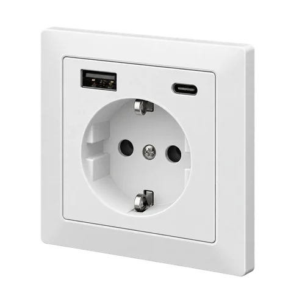
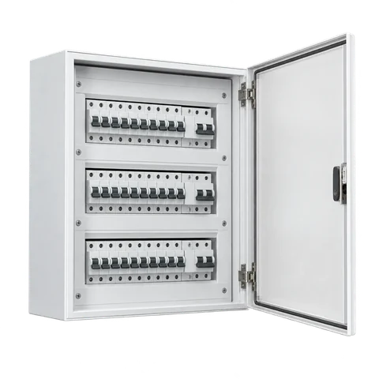
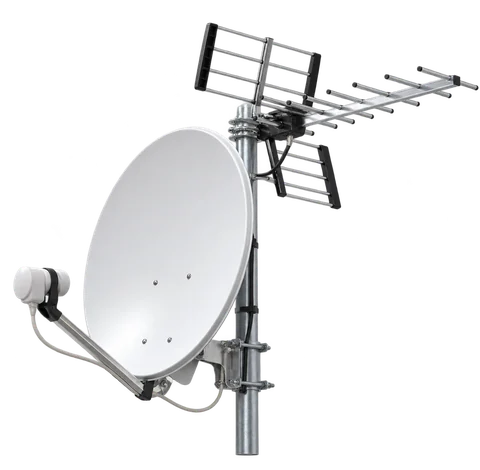
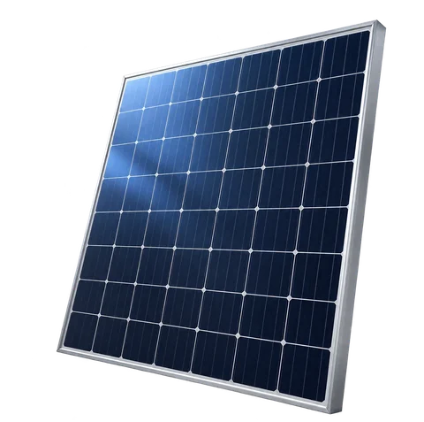

Puntos de recarga
Wallbox para coche eléctrico e híbrido, con gestión de potencia para no sobrecargar tu casa y ayuda con las subvenciones.
Más de 20 años resolviendo instalaciones eléctricas, antenas, puntos de recarga, placas solares y domótica en Torrevieja, Orihuela Costa y toda la Vega Baja. Te damos presupuesto sin compromiso en menos de 24 horas.




Un solo equipo para la instalación, el mantenimiento y los certificados. Sin subcontratas.

Wallbox para coche eléctrico e híbrido, con gestión de potencia para no sobrecargar tu casa y ayuda con las subvenciones.
Instalación completa según REBT, cuadros de protección, acometidas y certificado de instalación eléctrica (CIE).

Instalación, renovación y mantenimiento de TDT y satélite para comunidades y viviendas, adaptado a la normativa actual.

Fotovoltaica llave en mano: estudio de sombras, dimensionado, legalización, compensación de excedentes y mantenimiento.
Pantallas HD con visión nocturna y control desde el móvil. Sustituimos equipos antiguos aprovechando el cableado de 2 hilos.
Luz, clima, persianas y toldos controlados desde el móvil, con sensores que avisan de fugas de agua, humo o movimiento.
Zonas comunes, detectores de presencia, revisión anual de cuadros y respuesta urgente en alumbrado de emergencia y garajes.
Medimos tu instalación para localizar derroches, equipos ineficientes y comprobar si la potencia contratada es la que necesitas.
Instalamos, reparamos y mantenemos antenas de televisión en viviendas y comunidades de propietarios de Torrevieja, Orihuela Costa y la Vega Baja. Si la tele se pixela, has perdido canales o la comunidad tiene que renovar la instalación, medimos la señal y te decimos qué falla antes de cambiar nada.
Sin visitas eternas ni presupuestos que no llegan nunca.
Una llamada o un WhatsApp con una foto basta para hacernos una idea del trabajo.
Cerrado, por escrito y sin compromiso. Si hace falta, pasamos a verlo antes.
Dejamos la instalación funcionando, limpia y con la documentación en regla.
Tenemos la base en Torrevieja y salimos a diario por la Vega Baja, el sur de Alicante y el Mar Menor.
«Vinieron al día siguiente, dejaron el cuadro nuevo impecable y nos explicaron todo. Rapidez y profesionalidad.»
Juan Pérez · Torrevieja
Respuestas cortas a las dudas más habituales sobre electricidad, antenas y puntos de recarga.
Tenemos la base en la Avda. Habaneras 71 de Torrevieja y salimos a diario por Orihuela Costa, Orihuela, Santa Pola, La Marina, San Pedro del Pinatar, San Javier, Murcia, Alicante y Elche. Si estás cerca y no ves tu municipio, llámanos al 652 967 349 y te decimos si llegamos.
El presupuesto es gratis y sin compromiso. Te lo damos cerrado y por escrito en menos de 24 horas laborables. Muchas veces basta una llamada o un WhatsApp con una foto; si hace falta, pasamos a verlo antes.
Sí. Somos empresa instaladora autorizada y trabajamos en la zona desde 2003. Hacemos la instalación según el Reglamento Electrotécnico para Baja Tensión (REBT) y te entregamos el certificado de instalación eléctrica (CIE), el documento que se conoce como boletín eléctrico.
Lo más habitual es una antena desorientada, un amplificador averiado, el cableado o las tomas en mal estado, o que falte resintonizar tras un cambio de frecuencias de la TDT. Medimos la señal en la toma y en la antena para decirte qué falla antes de cambiar nada, tanto en viviendas como en antenas colectivas de comunidades.
Sí. Instalamos el wallbox en tu plaza con gestión de potencia para no sobrecargar la instalación, y te ayudamos con las subvenciones. En una plaza de garaje individual de una comunidad no hace falta que la junta lo apruebe: la Ley de Propiedad Horizontal solo exige comunicarlo antes a la comunidad, y el coste lo asume quien lo instala.
Sí. Llevamos antenas colectivas, porteros y videoporteros, iluminación de zonas comunes, revisión anual de cuadros y alumbrado de emergencia y de garajes. Lo hace nuestro propio equipo, sin subcontratas.
Sí, llave en mano: estudio de sombras, dimensionado, montaje, legalización y alta de la compensación de excedentes. Lo explicamos con detalle en la página de placas solares en Torrevieja.
Llámanos y te atendemos al momento. Si lo prefieres, déjanos tu teléfono y te llamamos nosotros.